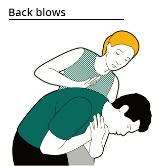

First Aid for Choking
Choking happens when an object gets stuck in the throat or windpipe, blocking the flow of air. This can be really dangerous because it cuts off oxygen to the brain.
- Signs of choking
- Difficulty breathing or noisy breathing.
- Coughing (may be weak or forceful).
- Skin, lips, and nails turning blue or gray.
- Loss of consciousness.
- First aid steps for adults and children over 1 year old
- Encourage to Cough:
- Back Blows:
- Abdominal Thrusts (Heimlich Maneuver):
If the person is coughing, encourage them to keep coughing to try to clear the blockage
If coughing doesn't work, perform 5 strong back blows. Stand to the side and slightly behind the person, lean them forward, and use the heel of your hand to give firm blows between their shoulder blades.

If back blows fail, perform 5 abdominal thrusts. Stand behind the person, place your arms around their waist, make a fist with one hand, place it just above their navel, grab your fist with your other hand, and thrust sharply inwards and upwards3.

- For infants under 1 year old
- Back Blows:
- Chest Thrusts:
Lay the baby face-down along your forearm, holding their head, and deliver 5 gentle but firm back thumps, using the heel of your hand

Lay the baby face-down along your forearm, holding their head, and deliver 5 gentle but firm back thumps, using the heel of your hand

- NOTEL: When to call for emergency help!
- If the person is still choking after trying back blows and abdominal thrusts, call emergency services immediately
- If the person becomes unconscious, call for emergency help and start CPR